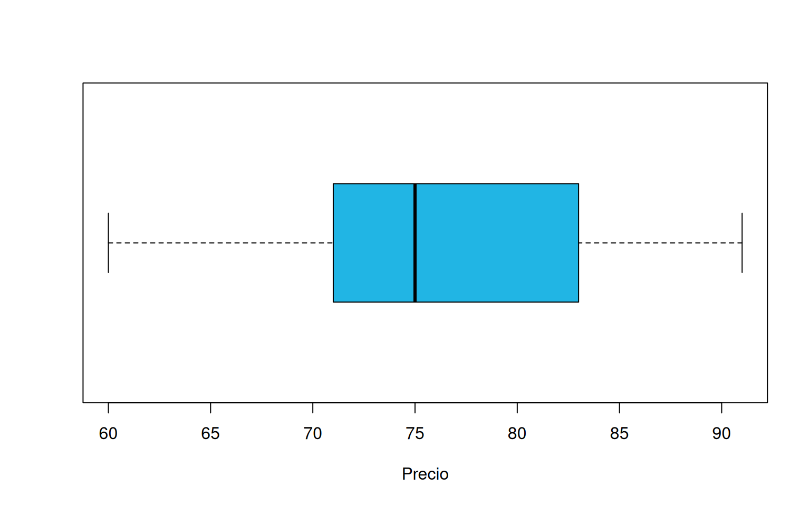
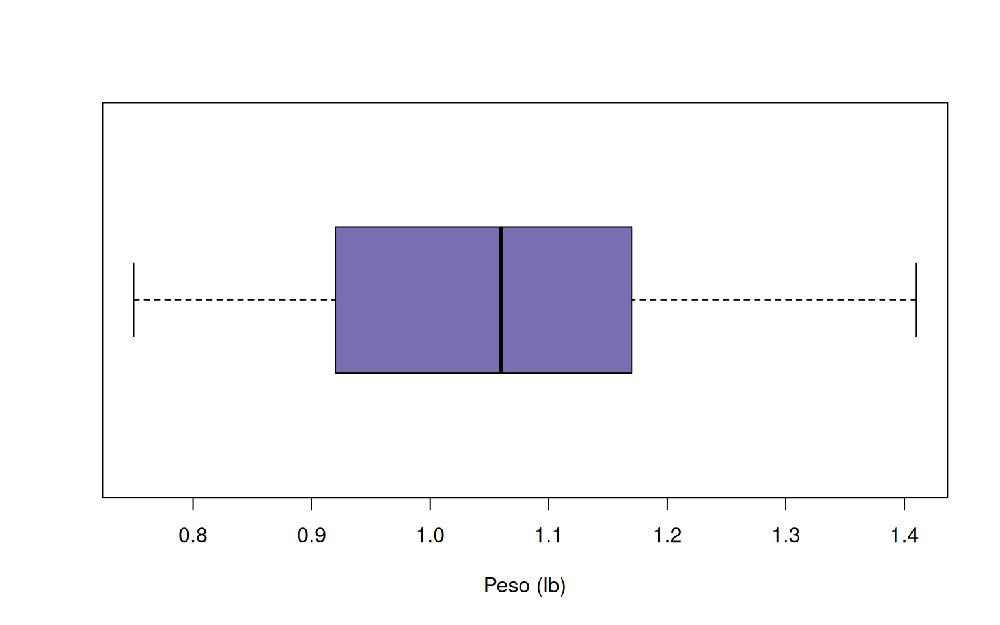

Este solucionario acompaña a monitoria1.Rmd. En los
ejercicios aplicados se sigue la secuencia examinar la evidencia
→ interpretar → decidir. Los procedimientos numéricos funcionan
como sustento de la conclusión, no como resultado final. Los valores
pueden cambiar ligeramente si se emplea una convención diferente para
cuartiles, asimetría o datos agrupados; por ello, siempre debe indicarse
el procedimiento utilizado.
| Ítem | Clasificación | Escala | Implicación para el análisis |
|---|---|---|---|
| 1 | Cuantitativa discreta | Razón | Media, desviación estándar y gráfico de puntos o barras. |
| 2 | Cuantitativa discreta | Razón | Conteos; son apropiadas las frecuencias y tasas de defectos. |
| 3 | Cuantitativa continua | Razón | Media, mediana, dispersión, histograma y cajas. |
| 4 | Cuantitativa discreta, si se cuentan hojas | Razón | Conviene analizar el conteo diario y su variabilidad. |
| 5 | Cualitativa nominal | Nominal | Frecuencias, porcentajes y barras. |
| 6 | Cuantitativa continua | Intervalo si está en °C o °F | Las diferencias son interpretables; el cero no significa ausencia de temperatura. |
| 7 | Cuantitativa continua | Razón | Permite comparaciones mediante cocientes. |
| 8 | Cualitativa nominal | Nominal | Comparación de frecuencias o desempeño por técnica. |
| 9 | Cuantitativa continua | Razón | Media, dispersión y gráficos para datos continuos. |
| 10 | Cualitativa ordinal | Ordinal | Mediana, porcentajes por categoría y barras ordenadas. |
| 11 | Cuantitativa, usualmente discreta | Intervalo | Las diferencias entre notas son interpretables; una nota cero no implica ausencia de conocimiento. |
| 12 | Cualitativa ordinal | Ordinal | Mediana y distribución por niveles. |
| 13 | Cualitativa nominal: es un identificador | Nominal | Promediar códigos no produce información útil. |
| 14 | Cuantitativa continua | Razón si es presión absoluta | Si fuera presión manométrica, debe justificarse el tratamiento del cero. |
| 15 | Cualitativa ordinal | Ordinal | Las categorías tienen un orden natural. |
| 16 | Cualitativa nominal | Nominal | Frecuencias, porcentajes y barras. |
La clasificación determina qué operaciones tienen sentido. Por ejemplo, promediar códigos de operario o categorías de pago no produce información útil.
| Ítem | Concepto |
|---|---|
| 1 | Mediana o percentil 50. |
| 2 | Coeficiente de asimetría. |
| 3 | Coeficiente de variación. |
| 4 | Desviación absoluta mediana (MAD). |
| 5 | Coeficiente de variación. |
| 6 | Varianza. |
| 7 | Rango intercuartílico (RIC). |
| 8 | Desviación absoluta media. |
| 9 | Rango. |
| 10 | Moda. |
| 11 | Media aritmética. |
| 12 | Asimetría negativa. |
| 13 | Percentil. |
| 14 | Semirango intercuartílico. |
| 15 | Cuartiles. |
| 16 | Puntuación estandarizada o puntaje \(z\). |
| 17 | Asimetría positiva. |
| 18 | Varianza. |
Los ítems 3 y 5 describen el mismo indicador; los ítems 6 y 18 también describen la varianza. La mediana, el RIC y la MAD son especialmente útiles ante valores extremos; la media y la desviación estándar son más sensibles a ellos.
| Ítem | Respuesta | Justificación |
|---|---|---|
| 1 | F | Todos los valores son iguales; la desviación estándar es 0. |
| 2 | V, aproximadamente | En una distribución acampanada o aproximadamente normal, casi todos los datos se ubican entre \(\bar{x}-3s\) y \(\bar{x}+3s\). |
| 3 | V | \(\bar{x}=\dfrac{n_1\bar{x}_1+n_2\bar{x}_2}{n_1+n_2}\). |
| 4 | V, como convención | En los gráficos usuales de frecuencias estas se ubican en el eje vertical, aunque existen diseños horizontales equivalentes. |
| 5 | V | El histograma representa distribuciones de variables cuantitativas continuas o agrupadas. |
| 6 | V | Superponer polígonos facilita comparar forma, centro y dispersión. |
| 7 | F, en general | Para una variable discreta suelen preferirse barras separadas o puntos; un histograma puede ocultar su carácter discreto. |
| 8 | F | Las barras corresponden principalmente a categorías o valores discretos; para datos continuos se usa el histograma. |
| 9 | F | La escala depende de los rangos y del propósito; no tiene que ser 1:1. |
| 10 | F | Puede haber valores negativos en uno o ambos ejes. |
| 11 | F | Al multiplicar por una constante positiva, media y desviación cambian en la misma proporción; el CV no cambia. |
| 12 | F | \(\operatorname{Var}(cX)=c^2\operatorname{Var}(X)\). |
| 13 | V | Sumar 4 cambia la media en 4, conserva la varianza y cambia el CV porque cambia la media. |
| 14 | V | \(s_{3X}=3s_X\). En general se multiplica por \(|c|\). |
| 15 | F | En una distribución simétrica media y mediana coinciden; media mayor que mediana suele sugerir asimetría positiva. |
| 16 | V | Sumar una constante desplaza \(Q_1\) y \(Q_3\) por igual, por lo que el RIC no cambia. |
| 17 | V | El CV es adimensional y permite comparar dispersión relativa, con las precauciones indicadas sobre la media. |
Carretera. Conviene un gráfico de barras por mes o una línea de avance acumulado. Los kilómetros construidos fueron:
porcentaje <- c(3.6, 7.6, 15.3, 24.5, 49.0)
km <- 134 * porcentaje / 100
data.frame(mes = 1:5, porcentaje, km = round(km, 3))## mes porcentaje km
## 1 1 3.6 4.824
## 2 2 7.6 10.184
## 3 3 15.3 20.502
## 4 4 24.5 32.830
## 5 5 49.0 65.660El quinto mes concentró 65.66 km, casi la mitad del proyecto. Esto sugiere una ejecución muy cargada al final, lo que aumenta el riesgo de retrasos.
Programa y sexo. Es apropiado un gráfico de barras agrupadas.
programa <- c("Electrónica", "Sistemas", "Civil", "Negocios", "Biología", "Mecánica")
hombres <- c(6, 4, 18, 3, 3, 2)
mujeres <- c(3, 2, 7, 16, 5, 1)
data.frame(programa, hombres, mujeres)## programa hombres mujeres
## 1 Electrónica 6 3
## 2 Sistemas 4 2
## 3 Civil 18 7
## 4 Negocios 3 16
## 5 Biología 3 5
## 6 Mecánica 2 1Civil es el programa más numeroso y Mecánica el menos numeroso. La mayor concentración masculina está en Civil y la femenina en Negocios Internacionales.
Memorias USB. Para describir la distribución son apropiados el histograma y el diagrama de cajas.
usb <- c(60,63,64,67,68,68,68,70,70,71,71,72,72,72,73,73,74,74,75,75,
75,75,75,76,76,77,77,79,80,83,83,84,85,86,87,88,88,89,89,91)
c(media = mean(usb), mediana = median(usb), sd = sd(usb), IQR = IQR(usb))## media mediana sd IQR
## 76.075000 75.000000 7.819724 12.000000boxplot(usb, horizontal = TRUE, col = c03, xlab = "Precio")
El precio típico es cercano a 75–76 unidades monetarias, con desviación estándar de 7.82. No aparecen valores atípicos por la regla de 1.5 RIC.
Empleados. Un gráfico de barras es el más claro. Hay 88 empleados: vendedores 40.9% y operarios 34.1%; juntos representan 75%. Las decisiones de capacitación y comunicación deberían priorizar estos dos cargos.
Como \(kg=lb/2.2\), si \(X\) es el peso en libras y \(Y=X/2.2\):
\[\bar{Y}=\frac{\bar{X}}{2.2}, \qquad s_Y=\frac{s_X}{2.2}.\]
La media y la desviación estándar cambian de unidad y se dividen por 2.2. El coeficiente de variación no cambia:
\[CV_Y=\frac{s_X/2.2}{\bar{X}/2.2}=CV_X.\]
Por tanto, la conversión no modifica la estabilidad relativa del proceso.
La producción típica es de unas 76 botellas por día: media 76.08 y mediana 75. La desviación estándar es 7.82 y el 50% central está entre 71 y 83 botellas. El CV es cercano al 10%, lo que indica variabilidad relativa moderada. La asimetría de 0.20 muestra una forma casi simétrica, ligeramente inclinada a la derecha, y no hay evidencia descriptiva fuerte de inestabilidad.
No puede decidirse si la máquina cumple sin una meta, límites de control o capacidad nominal. Se necesitan, además, datos en orden temporal para distinguir variación aleatoria de cambios del proceso.
Las respuestas son:
| Afirmación | Respuesta | Razón principal |
|---|---|---|
| a | V | Las ventas tienen cero significativo y admiten cocientes. |
| b | F | Para mayo, la cerca inferior es aproximadamente 4.66; 6.2 no es atípico. |
| c | V | \(CV_{May}=0.20<CV_{Jun}=0.23\). |
| d | F | La mediana de junio es 11.95. |
| e | F | \(s^2_{Jun}=2.65^2\approx7.02\); con los datos sin redondear es 7.03. |
| f | F | En \([8.7,13.3]\) está 56.7%, no aproximadamente 68%. |
| g | F | El impuesto promedio es \(0.16(11.34)\approx1.81\). |
| h | F | No tiene sentido promediar códigos de una variable ordinal; 12, 30 y 18 son frecuencias. |
| i | F | \(Q_1\) de mayo es 9.20. |
| j | F | Muestrear no basta: hay inferencia solo si se generalizan resultados a una población con un diseño válido. |
| k | F | El nivel tecnológico es ordinal. |
| l | V | Hay 30 empresas con nivel medio. |
| m | V | La asimetría de junio es -0.48. |
Junio tiene mayor media y mediana, pero también mayor dispersión relativa. La asociación debería estudiar las prácticas que aumentaron las ventas sin ignorar la heterogeneidad entre microempresarios.
| medida | valor |
|---|---|
| n | 500.000 |
| Media | 20.573 |
| Mediana | 20.735 |
| Desviación estándar | 5.132 |
| Asimetría | 0.011 |
| % menor de 10 | 1.200 |
| % entre 10 y 12 | 2.400 |
| % mayor de 12 | 96.400 |
Media y mediana son prácticamente iguales y la asimetría es cercana a cero; no hay evidencia de asimetría positiva relevante. Solo 2.4% está en el rango medio definido y 96.4% supera 12 minutos. La afirmación de que la mayoría se concentra entre 10 y 12 minutos es falsa. El banco debería priorizar la reducción de los tiempos altos y revisar por qué los límites propuestos quedan muy por debajo del comportamiento real.
La media (529.35 ms) y la mediana (527.85 ms) son muy próximas; la asimetría (0.06) también es cercana a cero. La distribución es aproximadamente simétrica. El CV de 18% indica dispersión relativa apreciable.
Con \(RIC\approx127.33\), las cercas son aproximadamente 273.5 y 782.9 ms. El mínimo, 277.14, no es atípico; el máximo, 804.80, sí lo es. En seguridad vial, los tiempos altos importan aunque sean poco frecuentes porque aumentan la distancia recorrida antes de frenar. Debe investigarse el caso alto y complementar el análisis con variables como edad, fatiga y condiciones de la vía.
peso <- c(1.08,0.99,0.97,1.18,1.41,1.28,0.83,1.06,1.14,1.38,
0.75,0.96,1.08,0.87,0.89,0.89,0.96,1.12,1.12,0.97,1.24,0.89,0.98,
1.14,0.92,1.18,1.17,0.75,0.83,0.87,0.86,0.89,0.89,0.92,0.93,0.96,
0.96,0.97,0.98,0.99,1.06,1.08,1.08,1.12,1.12,1.14,1.14,1.17,1.18,
1.18,1.24,1.28,1.38,1.41)
q <- quantile(peso)
fences <- c(inferior = q[2] - 1.5 * IQR(peso), superior = q[4] + 1.5 * IQR(peso))
c(media=mean(peso), mediana=median(peso), sd=sd(peso), IQR=IQR(peso), fences)## media mediana sd IQR inferior.25% superior.75%
## 1.0524074 1.0600000 0.1642241 0.2400000 0.5625000 1.5225000mean(peso > 1.11)## [1] 0.4074074boxplot(peso, horizontal=TRUE, col=c04, xlab="Peso (lb)")
No hay valores fuera de las cercas aproximadas 0.56 y 1.52 lb. La media 1.052 y la mediana 1.06 son cercanas, aunque la cola derecha es algo más extensa. El 40.7% pesa más de 1.11 lb, por lo que sí supera 20%. Sin una especificación nominal y tolerancias del fabricante no puede declararse incumplimiento; el supermercado debería solicitarlas antes de tomar una decisión.
La tabla completa, usando las marcas de clase, es:
| Intervalo | Marca | \(f_i\) | \(h_i\) (%) | \(F_i\) | \(H_i\) (%) |
|---|---|---|---|---|---|
| [0,10) | 5 | 3 | 9.68 | 3 | 9.68 |
| [10,20) | 15 | 6 | 19.35 | 9 | 29.03 |
| [20,30) | 25 | 7 | 22.58 | 16 | 51.61 |
| [30,40) | 35 | 12 | 38.71 | 28 | 90.32 |
| [40,50) | 45 | 3 | 9.68 | 31 | 100.00 |
La media agrupada es 26.94. La mediana agrupada es aproximadamente
\[20+\frac{15.5-9}{7}(10)=29.29.\]
La desviación estándar aproximada es 11.67 y el CV es 43.3%; bajo criterios usuales, los puntajes no son homogéneos. La clase modal es [30,40). La media menor que la mediana sugiere cierta asimetría negativa. La mediana es una representación más robusta. El intervalo [0,20), que contiene 29.0% del grupo, debería recibir atención académica prioritaria.
| Medida | Proveedor A | Proveedor B |
|---|---|---|
| Media | 39.33 | 36.92 |
| Mediana | 37.00 | 36.50 |
| Desviación estándar | 24.43 | 14.95 |
| RIC | 39.50 | 25.50 |
B es ligeramente más rápido en promedio y mucho más regular. No aparecen atípicos mediante la regla de 1.5 RIC. Si rapidez y confiabilidad importan, se elige B. A solo podría resultar atractivo si existiera otra ventaja no incluida en los datos, como costo o calidad superior.
jabon <- c(20.3,19.2,18.8,18.5,18.5,18.3,18.3,18.2,18.1,17.7,17.6,
14.4,17.4,17.4,17.3,17.3,17.1,17.0,16.6,16.5,16.5,16.5,16.4,16.3,
16.2,16.2,16.1,15.9,15.9,15.8,15.8,15.7,15.6,15.6,15.2,15.1,14.8,
14.6,14.3,14.3,14.1,13.8,13.7,13.6,13.3,13.1,12.8,12.7,12.6,11.6)
porcentaje <- mean(jabon >= 14 & jabon <= 18)
cv <- sd(jabon)/mean(jabon)
q <- quantile(jabon, c(.25,.75)); limites <- q + c(-1.5,1.5)*IQR(jabon)
c(media=mean(jabon), porcentaje_aceptable=porcentaje, CV=cv, limites)## media porcentaje_aceptable CV
## 15.9720000 0.6400000 0.1220553
## 25% 75%
## 10.0625000 21.7625000Solo 64% está entre 14 y 18 onzas, frente al mínimo de 90%. El CV es 12.21%, superior al 10%. Las cercas son aproximadamente 10.06 y 21.76; no hay valores atípicos, pero esto no compensa los otros incumplimientos. Debe detenerse la producción y ajustarse la máquina.
| Grupo | Media | Mediana | Desviación estándar |
|---|---|---|---|
| Usa vapeador | 46.22 | 48.10 | 13.14 |
| No usa vapeador | 30.29 | 30.20 | 7.13 |
La diferencia de medias es 15.93 minutos y el grupo que usa vapeador también es más variable. Descriptivamente existe una diferencia importante. Sin embargo, las muestras son pequeñas y no se informa asignación aleatoria ni control de factores como cafeína, estrés o edad. Se puede concluir asociación en la muestra, no causalidad. Para una decisión institucional se requeriría un diseño más sólido e inferencia estadística.
salario <- c(1.1,1.2,1.4,1.7,1.9,1.3,1.6,1.4,1.3,1.6)
c(media=mean(salario), mediana=median(salario), sd=sd(salario))## media mediana sd
## 1.4500000 1.4000000 0.2460804Media = 1.45 millones y mediana = 1.40 millones. Son cercanas y no hay un valor extremo dominante, así que ambas describen razonablemente el centro. La mediana es ligeramente más robusta. Para evaluar equidad no basta el centro: deben revisarse la dispersión, funciones, horas trabajadas y criterios de remuneración.
El peso total es \(80(130)=10\,400\) kg. Los primeros 60 pesan \(60(120)=7\,200\) kg. Los 20 restantes pesan \(3\,200\) kg en total, por lo que su promedio es
\[\frac{3\,200}{20}=160\text{ kg}.\]
No se promedian 130 y 120 porque corresponden a grupos de tamaños distintos. Los primeros 60 aportan más peso total (7 200 kg), aunque los restantes tienen mayor promedio individual.
Como las distancias de ida y regreso son iguales, corresponde la media armónica:
\[\bar{v}=\frac{2}{1/40+1/60}=48\text{ km/h}.\]
La media aritmética 50 km/h es incorrecta porque se permanece más tiempo a la velocidad baja. No puede obtenerse la mediana de las velocidades observadas a partir de solo dos promedios de tramo; se necesitarían las observaciones de velocidad o el tiempo recorrido a cada velocidad.
| Forma | Relación usual | Medida recomendada |
|---|---|---|
| Acampanada y simétrica | Media \(\approx\) mediana | Media, acompañada de desviación estándar. |
| Rectangular y simétrica | Media \(\approx\) mediana | Ambas son válidas, aunque el centro no describe por sí solo la forma plana. |
| Asimétrica positiva | Media \(>\) mediana | Mediana y RIC. |
| Asimétrica negativa | Media \(<\) mediana | Mediana y RIC. |
Los valores extremos arrastran la media hacia la cola; la mediana cambia menos. Por eso, la decisión sobre la medida central debe considerar la forma y no limitarse a comparar dos resultados numéricos.
El resumen indica:
Ventas presenta la mayor cola derecha; conviene investigar establecimientos cercanos a 95. La utilidad es mucho más heterogénea que ventas y costos, con casos bajos que requieren atención.
Las correlaciones lineales observadas son muy débiles: ventas-costos -0.02, ventas-utilidad 0.13, ventas-empleados 0.00 y utilidad-empleados 0.02. En esta base no hay evidencia de una relación lineal importante.
| Estrato | Ventas medias | Costos medios | Utilidad media | Empleados medios |
|---|---|---|---|---|
| 2 | 62.00 | 35.91 | 26.27 | 17.17 |
| 3 | 61.48 | 34.99 | 24.26 | 16.81 |
| 4 | 58.03 | 36.16 | 24.79 | 15.79 |
| 5 | 61.76 | 35.63 | 25.85 | 14.05 |
| 6 | 61.92 | 36.43 | 22.35 | 15.20 |
No aparece un gradiente monotónico claro por estrato. Recomendaciones: investigar supermercados con utilidad baja; estudiar procesos de los negocios con ventas altas; y segmentar intervenciones por desempeño real, no únicamente por estrato. Estas son asociaciones descriptivas, no efectos causales.
Hay 44 mediciones válidas. De ellas, 35 están entre 5.0 y 8.0 g: \(35/44=79.55\%\). La media es 6.31 g, la mediana 6.15 g y la desviación estándar 1.09 g. Las cercas de 1.5 RIC son aproximadamente 4.09 y 8.39 g; 8.5, 8.7 y 8.9 g son valores atípicos altos.
Con la información disponible, el cumplimiento es inferior a 85%, por lo que correspondería mantenimiento mayor. Sin embargo, faltan seis mediciones exigidas por el protocolo. La decisión correcta es no autorizar el inicio, completar o repetir la muestra y, si se confirma el resultado, solicitar mantenimiento.
Los principales resultados son: media 10.014 h, mediana 10.6 h, desviación estándar 2.62 h, RIC 3.675 h y asimetría aproximada -0.37.
| Criterio | Resultado | Cumple |
|---|---|---|
| Sin atípicos | La cerca inferior es 2.3125 h; 2.3 h queda ligeramente por debajo. | No |
| Máximo 5% por encima de 10 h | 56% supera 10 h. | No |
| Al menos 80% en 8 h o menos | Solo 28% cumple. | No |
| Asimetría positiva | La asimetría es negativa. | No |
El principal problema es el elevado porcentaje de atenciones superiores a 10 horas. Debe revisarse la capacidad y el flujo de asignación de casos. Además, exigir asimetría positiva no es un buen objetivo por sí mismo: es preferible fijar percentiles de servicio, por ejemplo que el percentil 90 no supere un límite operativo.
Los resultados relevantes son: media 18.359 h, mediana 18.25 h, desviación estándar 3.65 h, RIC 4.8 h, CV 19.88% y asimetría 0.059. Las cercas son 8.8 y 28.0 h; no hay atípicos fuera de ellas.
| Criterio | Resultado | Cumple |
|---|---|---|
| Sin atípicos altos | Máximo 26.7 h, debajo de la cerca 28.0. | Sí |
| Media \(\leq24\) h | 18.359 h. | Sí |
| Máximo 10% sobre 24 h | 8%. | Sí |
| Al menos 70% en 15 h o menos | 14%. | No |
| Aproximadamente simétrica | Media, mediana y asimetría son consistentes con simetría. | Sí |
| CV \(\leq20\%\) | 19.88%. | Sí, por margen pequeño |
| Máximo 5% por debajo de 6 h | 0%. | Sí |
El criterio crítico es completar 70% en 15 horas: el proceso está muy lejos de la meta. El banco debería revisar si esa meta es realista y, si lo es, rediseñar el flujo para desplazar toda la distribución hacia tiempos menores, no solo reducir casos extremos.
El gráfico de líneas muestra la variación entre solicitudes y facilita detectar observaciones altas o bajas. Como el identificador de solicitud no garantiza orden cronológico, no prueba una tendencia temporal; para monitorear el proceso se necesitan fechas y un gráfico de control o serie temporal.